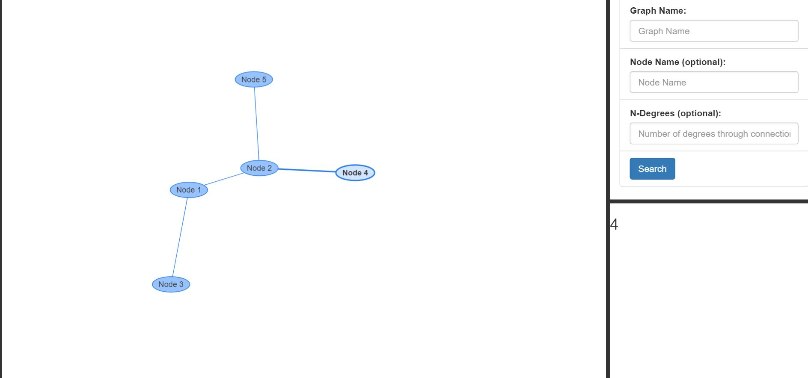

Graphalyzer is a graph visualizer and analysis tool. This project is a work in progress.
An Iowa State Senior Design joint project with Workiva, Graphalyzer transposes data into an interactive graphical visualization. User interaction with the graph gives more detailed results on the data itself.
More information (and pictures!) will be posted as this project is developed.
Here's a photo of Graphalyzer as of the end of our first semester of work:
